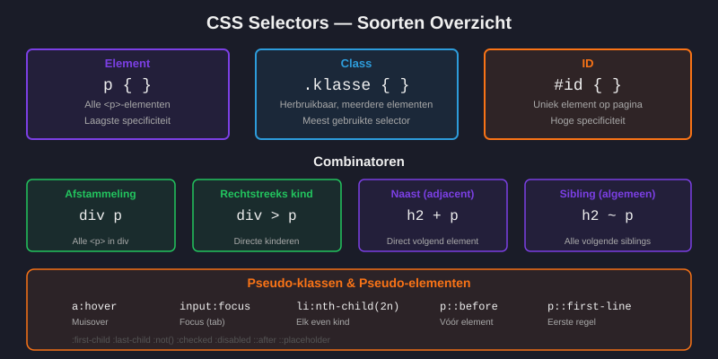
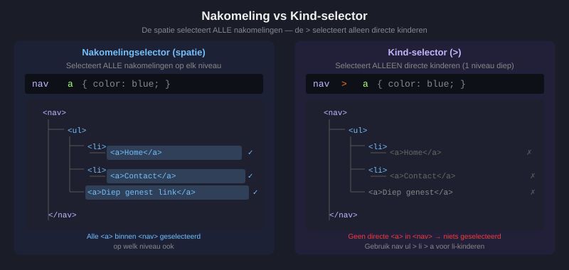
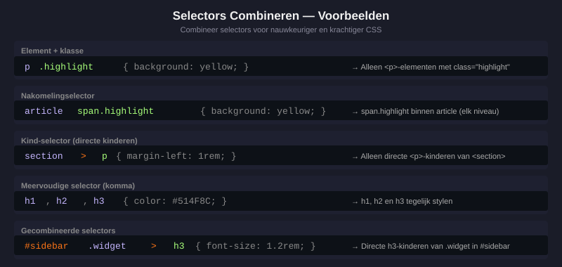
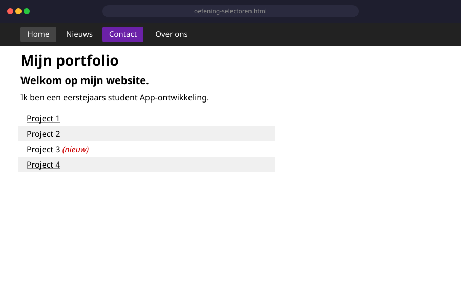

CSS Selectoren (verdieping)
- Uitleggen wat een CSS-selector is en waarvoor hij dient
- De meest gebruikte selectoren herkennen en toepassen: element, klasse, id, nakomelingen, kinderen
- Pseudo-klassen gebruiken zoals
:hover,:focus,:first-child,:last-child,:nth-child() - De
:has()selector uitleggen en toepassen - Controleren welke selectoren ondersteund worden via caniuse.com
- Oefeningen maken op CSS Diner
1. Wat is een selector?
Een CSS-regel bestaat altijd uit twee delen: de selector en het declaratieblok.
/* selector { property: waarde; } */
p {
color: blue;
}De selector bepaalt welk(e) HTML-element(en) de stijlregel krijgen.

2. De meest gebruikte selectoren
2.1 Element-selector (type-selector)
/* Alle paragrafen krijgen een blauwe tekstkleur */
p {
color: blue;
}
/* Alle h1-titels worden groter */
h1 {
font-size: 2rem;
}Let op: dit geldt voor alle p- of h1-elementen op de pagina. Wil je specifieker zijn, gebruik dan een klasse.
2.2 Klasse-selector (.klasse)
<p class="waarschuwing">Let op: sla regelmatig op!</p>
<p>Dit is gewone tekst.</p>.waarschuwing {
color: red;
font-weight: bold;
}Semantische klassen:
| Slecht (beschrijft uiterlijk) | Goed (beschrijft betekenis) |
|---|---|
.roodeBalk | .foutmelding |
.groteTekst | .hoofdtitel |
.groen | .bevestigd |
2.3 ID-selector (#id)
#paginahoofd {
background-color: #222;
color: white;
}Gebruik id spaarzaam voor stijlen. In de praktijk worden id's meer gebruikt voor navigatie of JavaScript dan voor CSS.
2.4 Nakomelingselector (spatie)
/* Selecteert ALLE a-elementen die ergens BINNEN nav staan */
nav a {
text-decoration: none;
color: white;
}2.5 Kind-selector (>)
/* Alleen de directe li-kinderen van .menu */
.menu > li {
font-weight: bold;
}
2.6 Meervoudige selector (komma)
/* Met komma — veel efficiënter: */
h1, h2, h3 {
color: #514F8C;
}3. Pseudo-klassen
Pseudo-klassen selecteren elementen op basis van hun toestand of positie. Ze beginnen altijd met een dubbele punt (:).
3.1 :hover en :focus
/* Als de muis over een link beweegt */
a:hover {
color: orange;
text-decoration: underline;
}
/* Als een invoerveld de focus heeft */
input:focus {
border: 2px solid blue;
outline: none;
}3.2 :first-child, :last-child, :nth-child()
/* Het eerste li-element */
li:first-child { font-weight: bold; }
/* Het laatste li-element */
li:last-child { border-bottom: none; }
/* Elk tweede li-element (zebra-patroon) */
li:nth-child(2n) { background-color: #f0f0f0; }
/* Het derde element */
li:nth-child(3) { color: red; }| Formule | Wat wordt geselecteerd |
|---|---|
2n of even | Alle even elementen (2, 4, 6, ...) |
2n-1 of odd | Alle oneven elementen (1, 3, 5, ...) |
3n | Elk derde element (3, 6, 9, ...) |
3 | Enkel het derde element |
3.3 :not() — uitsluiten
/* Alle li-elementen behalve degene met class="actief" */
li:not(.actief) {
opacity: 0.6;
}4. De :has() selector — de parent-selector
De :has() selector is relatief nieuw en erg krachtig. Het laat je toe om een parent-element te selecteren op basis van wat erin zit.
/* Selecteer a-elementen die een img bevatten */
a:has(> img) {
border: 3px solid gold;
display: block;
}
/* Alleen kaartjes MET een afbeelding */
.kaart:has(img) {
background-color: #e8f4ff;
padding: 1rem;
}Controleer altijd op caniuse.com of een selector al breed ondersteund wordt.
5. Combineren van selectoren
/* Alleen a-elementen met class="actief" */
a.actief {
font-weight: bold;
}
/* Een p-element dat een direct kind is van section */
section > p {
margin-left: 1rem;
}
/* Een span die ergens binnen een article staat EN class="highlight" heeft */
article span.highlight {
background-color: yellow;
}
6. caniuse.com — Browserondersteuning checken
CSS groeit voortdurend. Voordat je een nieuwe selector gebruikt in een productiesite, check je altijd op caniuse.com.
Stappenplan:
- Ga naar caniuse.com
- Typ de selector of property in (bv.
:has) - Je ziet welke browsers en versies dit ondersteunen
- Beslis of je het al kunt gebruiken
Oefeningen
CSS Diner is een interactieve oefening waarbij je CSS-selectoren leert door de juiste borden, appels en vorken te selecteren.
- Ga naar https://flukeout.github.io/
- Los de eerste 15 niveaus op. Schrijf telkens de selector die je gebruikt in je notitieboekje.
- Probeer ook niveaus 16 tot 20!
Maak een bestand oefening-selectoren.html met de volgende structuur en stijl het daarna via een extern CSS-bestand selectoren.css:
<nav>
<ul>
<li><a href="#">Home</a></li>
<li><a href="#">Nieuws</a></li>
<li class="actief"><a href="#">Contact</a></li>
<li><a href="#">Over ons</a></li>
</ul>
</nav>
<main>
<h1>Mijn portfolio</h1>
<p class="intro">Welkom op mijn website.</p>
<p>Ik ben een eerstejaars student.</p>
<ul class="projecten">
<li>Project 1</li>
<li>Project 2</li>
<li>Project 3 <span>(nieuw)</span></li>
<li>Project 4</li>
</ul>
</main>Maak nu een bestand selectoren.css en zorg voor het volgende:
- Alle
a-elementen innavzijn wit en hebben geen onderstreping - Bij hover op een
ain denavverandert de kleur naar geel - Het
li-element met classactiefheeft een andere achtergrondkleur - De
pmet classintrois groter en vetgedrukt - Het eerste en het laatste
livan.projectenzijn onderstreept - Elk even
livan.projectenheeft een lichtgrijze achtergrond - De
spanin de lijst is rood en cursief

Huistaak
Opdracht: Stijlgids met CSS-selectoren
Maak een pagina stijlgids.html met bijhorend stijlgids.css. De pagina toont een mini-stijlgids voor een fictieve website (bv. een school, een webwinkel of een blog). Je demonstreert je kennis van CSS-selectoren.
Deel 1 — Basisstructuur (2 punten)
- Een
<header>met logo-tekst en navigatie (minstens 4 links) - Een
<main>met minstens twee<section>-blokken - Een
<footer>met copyright-tekst
Deel 2 — Selectoren in de praktijk (5 punten)
- Stijl de navigatielinks met een nakomelingsselector (
nav a) - Stijl een specifieke sectie via een klasse-selector (bv.
.uitgelicht) - Stijl één uniek element via een id-selector
- Gebruik
:hoverop de navigatielinks (kleur- of achtergrondwijziging) - Gebruik
:nth-child()om om-en-om rijen in een lijst een andere achtergrond te geven (zebra-effect)
Deel 3 — Specificiteit aantonen (3 punten)
Maak een element dat door drie verschillende regels gestyled wordt: via het element, via een klasse en via een id. Voeg een HTML-commentaar toe dat uitlegt welke regel wint en waarom.
Vragenlijst
Controleer of je de leerstof van dit hoofdstuk begrijpt.
Welke selector selecteert alleen de directe kinderen van een element, niet de kleinkinderen?
Welke pseudo-klasse stijlt een element wanneer de muis erover beweegt?
Welke :nth-child()-formule selecteert alle even elementen?
Wat doet de selector .kaart:has(img)?
Welke website gebruik je om te controleren of een CSS-selector door browsers ondersteund wordt?
Wat is het verschil tussen nav a en nav > a?